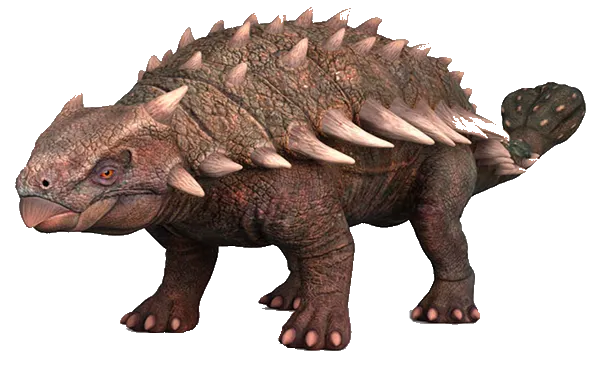

Dinossauros em exibição

Allosaurus
O Allosaurus foi um dos principais predadores do Jurássico Superior, vivendo cerca de 150 milhões de anos atrás. Ele media entre 8 e 12 metros e tinha dentes serrilhados ideais para cortar carne, além de ser mais ágil que muitos outros carnívoros da época.
Ankylosaurus
O Ankylosaurus foi um dos dinossauros mais bem protegidos que já existiram, vivendo no final do período Cretáceo. Ele tinha o corpo coberto por placas ósseas e espinhos, formando uma verdadeira armadura natural que o tornava extremamente difícil de atacar, mesmo para grandes predadores como o T. rex.
